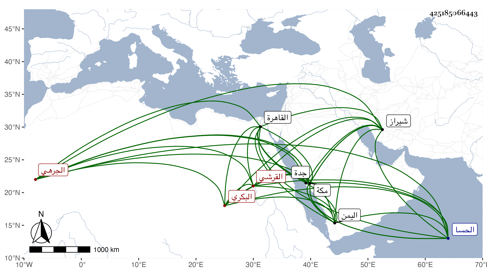

0902Sakhawi.DawLamic.ITO20230111-ara1.EIS1600.425185066443
Biography ID: 425185066443
862
نعمة الله بن محمد بن عبد الرحيم بن عبد الكريم بن نصر الله بن سعد الله بن أبي حامد الشرف أو الشهاب أبو الخير بن العفيف القرشي البكري الجرهي بفتح الجيم والراء كما ضبطه شيخنا وحقق لي غيره من الفقهاء كسرهما معا الشيرازي الشافعي الماضي أبوه وجده ويسمى أحمد من بيت كبير . ولد في صفر سنة خمس عشرة وثمانمائة بشيراز وسمع الكثير من أبيه وجماعة بمكة وحبب إليه الطلب . ذكره شيخنا في معجمه فقال : شاب فاضل قدم القاهرة من مكة في طلب الحديث فسمع الكثير ولازمني مدة طويلة وقرأ علي كثيرا وطاف على الشيوخ واشتغل في عدة علوم ومهر وفضل في مدة يسيرة ، وعلق أشياء حسنة وجمع مجاميع ثم توجه إلى بلاده في شوال سنة تسع وثلاثين لزيارة والديه فبلغني أنه تزوج ولم يلبث أن مات في رابع رجب سنة أربعين ، زاد غيره في ليلة جمعة أول جمعة منه ببندر من بنادر هرمز رحمه الله ، وهو في عقود المقريزي باختصار ، وأثنى عليه وأورد شيخنا في معجمه عنه من نظمه مما كتب به إليه :
| يا من علا بالعلى عن وصف وصاف | وفاق جل الورى في كل أوصاف |
| وصح عنه حديث الجود ننقله | عن كفه البحر أو عن سحب أسلاف |
| تواترا بلغ الآفاق واشتهرا | عز الغريب لدى أفضاله الوافي |
| خفضت منصوب رايات العداة كما | رفعت حالة سوال الأرياف |
| قصدت حضرتك العلياء من وطني | هجرت صحبة إخواني وألاف |
| حرصا على العلم والتحصيل مجتهدا | لعلني أغترف من بحرك الصاف |
| وما أريد سوى وجه الكريم به | عساه يجبر تقصيرى وإسرافي |
| هذا وسيلتي من فيض فضلك أن | تخصني بين طلاب وطواف |
| يا ملجأ لذوي الآمال قاطبة | أنظر لمغترب للعلم طواف |
| وارحمه ثم أعنه في تطلبه | فأنت معدن إعطاف وإلطاف |
| عطفا لغربته كشفا لكربته | جبرا لما يلتقي من دهره الجافي |
| الله يبقيك نورا يستضاء به | فيهتدي بك دهرا كل أصناف |
وقال في إنبائه أنه حصل كثيرا من تصانيفه ومهر فيها وكتب الخط الحسن وعرف العربية ثم بلغه أن والده مات فتوجه في البحر فوصل إلى البلاد ورجع هو وأخوه قاصدين إلى مكة فغرق في الحسا ونجا أخوه فلما وصل اليمن ركب البحر إلى جدة فاتفق وقوع الحريق بها فاحترق ولكنه لم يمت مع احتراق رجليه رحمهم الله . قلت ورأيت له سماعا على العلاء علي بن عثمان بن عمر بن صالح بن الصيرفي الشافعي والشمس محمد بن أبي بكر بن محمد بن محمود بن حامد الأذرعي الدمشقي بها ، ولم يسلم هذا الأصيل النبيل الفاضل الكامل من أذى البقاعي لسبب غير طائل حسبما حكاه لي القاضي عز الدين الحنبلي وبالغ في الثناء عليه والتوجع لصنيع البقاعي به .
